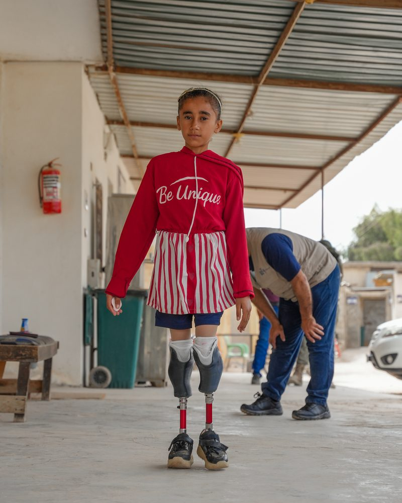
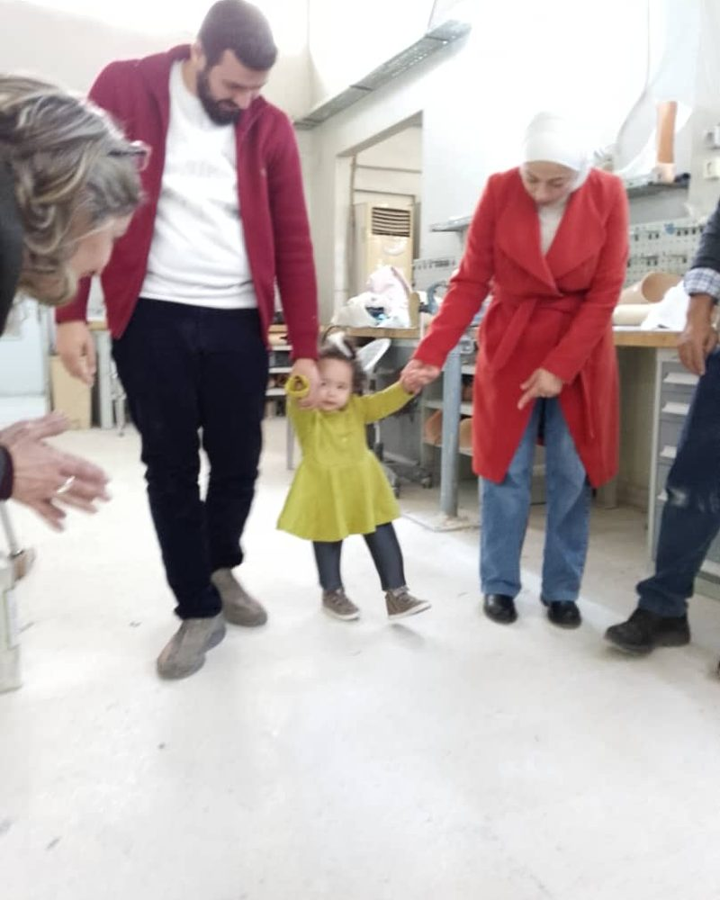

Help a Kid to Walk and Play Again!
We provide each patient with a custom 3D printed prosthesis, which includes physical therapy, psychosocial support, and home visits to check maintenance requests.
-

Freedom
Going where they want to go, on their own.
-

Hope
Daring to dream about the future again.
-

Belonging
Back with family, friends, and community.
-

Confidence
Standing tall and believing in themselves.